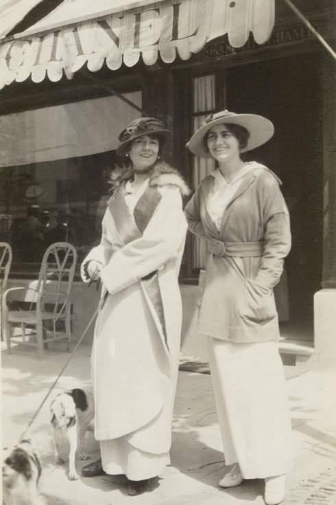

Gabrielle Bonheur Chanel
Modna dizajnerka Koko Šanel poznata je po bezvremenskom dizajnu, odelima zaštitnih znakova i malim crnim haljinama. Dvadesetih godina proslog veka lansirala je svoj prvi parfem i na kraju predstavila Šanel odelo i malu crnu haljinu, sa naglaskom na pravljenje odece koja je bila udobnija za žene. Postala je veoma cenjena ikona stila poznata po svojim jednostavnim, ali prefinjenim odelima uparenim sa sjajnim dodacima, poput nekoliko bisera.
Gabrielle Bonheur Chanel rodena je 1883. godine u dobrotvornoj bolnici koju su vodile sestre Providence (siromašna kuca) u Saumuru, Francuska. Ona je bila drugo dete Jeanne s Albertom Chanelom (prva, Julia, rodena je manje od godinu dana ranije). Albert Chanel bio je usputni ulicni prodavac koji je prodavao radnu odecu i donji veš, živeo nomadski život, putujuci do i iz tržišnih mesta. Porodica je prebivala u zaseocima. 1884. oženio se Jeanne Devolle
Kad je Gabrijela imala 11 godina, Jeanne je umrla u 32 godini. Njen otac poslao je svoja dva sina da rade kao radnici na farmama i poslao svoje tri cerke u samostan Aubazine, koji je vodio sirotište. Bio je to cudan, štedljiv život, koji je zahtevao strogu disciplinu . Smeštaj u sirotište možda je doprineo Chanelovoj buducoj karijeri, jer je tamo naucila da šije. Sa osamnaest godina Chanel, prestara za ostanak u Aubazine, otisla je da živi u pansionu za katolicke devojke u gradu Moulins.
Kasnije u životu, Chanel je pricu o svom detinjstvu prepricavala nešto drugacije. Cesto je ukljucivala i glamuroznije racune, koji uglavnom nisu istiniti.Ona je rekla da je, kad joj je umrla majka, otac otplovio za Ameriku da potraži bogatstvo, pa je poslata da živi sa dve tetke. Takode je tvrdila da se rodila deceniju kasnije od 1883. godine i da joj je majka umrla kad je bila mnogo mlada od 12 godina
Naucivši šivenje tokom svojih šest godina u Aubazineu, Chanel je pronašla posao kao krojacica. Kad nije šila, pevala je u kabareu koji su posecivali casnike konjice. Chanel je svoj scenski debi otpevala na kafe-koncertu (popularno mesto zabave ere) u paviljonu Moulins, La Rotonde. Bila je poza, izvodacica koja je zabavljala gomilu izmedu zvezda. Upravo u to vreme Gabrijela je stekla ime "Koko" kada je provodila noci pevajuci u kabareu, cesto pesmu, "Ko je video Coco?" Cesto je volela da kaže da joj je nadimak dao njen otac. Drugi veruju da je "Coco" potekla od Ko Ko Ri Ko i Kui ku'a vu Coco, ili je to bila aluzija na francusku rec za zadržanu ženu, kokos.
1906, Chanel je radila u banjskom gradu Vichi. Vichi se hvalila bogatstvom koncertnih dvorana, pozorišta i kafica gde se nadala da ce uspeti kao izvodac. Chanelova mladost i fizicki šarm impresionirali su one za koje je snimala audiciju, ali njen pevacki glas je bio marginalan i nije uspela da nade scenski rad. Chanel se vratila u Moulins, a njen bivši je progonio La Rotonde. Tada je shvatila da ozbiljna scenska karijera nije u njenoj buducnosti.
U Moulinsu, Chanel je upoznala mladog francuskog bivšeg oficira konjice i tekstilnog naslednika, Etienne Balsan. Sa dvadeset tri godine, Chanel je postala Balsonova ljubavnica. Sledece tri godine živela je s njim u njegovom dvorcu Roiallieu u blizini Compiegnea, poznatog podrucja zbog svojih šumskih konjickih staza i lovackog života. Balzanovo bogatstvo omogucilo je kultivaciju društvenog seta koji se razotkrivao u zabavljanju i zadovoljstvu ljudskih apetita, uz svu impliciranu pratecu dekadencu. Balsan je obasipao Chanel baloncicima "bogatog života" - dijamantima, haljinama i biserima.
1908. Chanel je zapocela aferu sa jednim od Balsanovih prijatelja, kapetanom Arthurom Edvardom 'Boi' Capel. Capel, bogati pripadnik engleske više klase, smestio je Chanel u stan u Parizu i finansirao je njene prve prodavnice. Par je vreme provodio zajedno u modernim letovalištima kao što je Deauville, ali uprkos Chanelovoj nadi da ce se zajedno useliti, Capel joj nikada nije bio veran. Njihova afera trajala je devet godina. Ni nakon što se Capel oženio engleskom aristokratkinjom, Ladi Diana Vindham 1918. godine, nije se potpuno raskinuo sa Chanel. Poginuo je u saobracajnoj nesreci 21. decembra 1919.
Chanel je umrla 10. januara 1971. u svom stanu u hotelu Ritz. Nikad se nije udavala, rekavši jednom "Nikad nisam htela da težim više na coveku nego na ptici." Stotine ljudi okupilo se u crkvi Madeleine kako bi se oprostile od modne ikone. U pocast su mnogi ožalošceni nosili Chanelova odijela.
Nešto više od decenije nakon njene smrti, dizajner Karl Lagerfeld preuzeo je kompaniju kako bi nastavio naslede Chanel. Danas njenu istoimenu kompaniju drži privatno porodica Vertheimer i dalje uspeva, za koju se veruje da svake godine stvara stotine miliona prodaje.

Krajem 1910. godine, Coco Chanel konacno je raskinula sa Etienne Balsan i pocela da živi sa kapetanom "Boi" Capel. 1910. godine Coco je postala licencirani modista (proizvodac šešira) i otvorila je butik pod nazivom Chanel Modes na 21 Rue Cambon u Parizu. Ubrzo je ulica postala poznata širom sveta i bila je vezana za njeno ime pola veka.
1913. godine Coco Chanel otvorila je svoj butik u Deauvilleu koji je brzo privukao redovne klijente. Kao tvorac poznatih šešira sanjala je da razvije vlastitu liniju ženske odece. U ovom trenutku, ona nije imala pravo da pravi „prave“ ženske haljine, jer bi mogla biti izvedena pred sud zbog ilegalne konkurencije, jer nije bila licencirana krojacica. Koko je pronašao rešenje. Pocela je da šije haljine od dres tkanine, koja je korišcena samo za muško donje rublje i zaradila je svoj prvi kapital na tome. Clanovi bliske porodice Coco Chanel oduvek su bili podrška. Jedna je bila njena sestra Antoinette Chanel i njena tetka Adrienne Chanel. Obe devojke koje je Coco regrutovao za modeliranje Chanel-ovih dizajna i reklamiranje Chanel-ove modne odece.
Sva njena otkrica oblacenja nastala su na taj nacin. Tokom dizajniranja Coco se nije isticala, ali je pojednostavila detalje. Nije crtala svoje skice odece i nije ih šila. Obicno je Coco bacala krpu na manekenku, a zatim je isekla i sklapala bezoblicnu masu materijala dok se željena silueta nije ocitovala.
Chanel je brzo postala svetski modni dizajner, prevrcuci se u centru pažnje. Stvorila je stil koji je do sada bio nezamisliv za žene - trenerke. Odvažila se da se pojavi u mornarskom odelu i uskoj suknji na plažama primorskih mesta. Stil koji je proizvela Kuca kuce Chanel bio je jednostavan, praktican i elegantan. Medutim, 1914. godine poceo je Prvi svetski rat. U Francuskoj je vladao haos i „gozba tokom kuge“. Coco je nastavila intenzivno raditi, predstavljajuci nove zahteve za odecom i generišuci nove ideje: prvo žensko mršavo odijelo kompanije Chanel. Par godina kasnije, ona je šila redingote bez pojasa i ukrasa, uklanjajuci poprsje i obline gotovo muško strogo. Napravila je podcenjeni struk, košulju za haljine, pantalone za žene i pidžamu za plažu.
Uprkos cinjenici da je Kuca kuce Chanel predstavila pantalone modnih žena, Coco ih je nosila prilicno retko, jer je verovala da žena nikada nece izgledati u pantalonama jednako dobro kao što to cini muškarac. Medutim, dopala joj se kratka muška frizura. Razlog je jednostavan - o kratkoj kosi je lakše brinuti se. Jednom je Coco presekla kosu i ponosno izašla u svet, objašnjavajuci da joj se sve u kuci zapalilo i da su joj spalili kovrdze. Stoga je 1917. godine preovladao trend kratke muške frizure medu ženama. Pre akcije Coco Chanel, žene su morale biti duge kose.
Kada je 1919. godine u saobracajnoj nesreci poginuo njen voljeni Artur "Boi" Kapel, Koko Šanel je rekla: "Ili cu i ja umreti ili cu završiti ono što smo zapoceli zajedno. " Da se ova tragedija nije dogodila u Chanelinom životu, ona nikada ne bi pocela eksperimentirati sa crnom platnom. Neki kažu da je ona dodala odecu u crnoj boji da bi sve žene u Francuskoj tugovale za svojom voljenim. Koko nije smela da žali zvanicno, jer nije bila udata za Arthura Capela.
U leto 1920-ih, Coco Chanel otvorila je veliku modnu kucu u Biarritzu. Kasnije se srela s ruskim emigerom, velikim knezom Dmitrijem Pavlovicem, i oboje su osetili obostranu strast jedni prema drugima. Romantika je bila kratka, ali plodna. Koko je naucila mnoge nove ideje od svog egzoticnog ljubavnika. Štaviše, posle ovog sastanka, u njenoj novoj kolekciji bili su delovi majica ruske narodne nošnje sa originalnim vezom. Najznacajnije je da je tokom putne turneje po Francuskoj Dmitri Pavlovic upoznao Coco s ruskim parfumerom, Ernestom Beaukom, kada su se zaustavili u gradu Grasse. Ernestov otac radio je dugi niz godina na carskom dvoru.
Sastanak je oboma bio plodan. Nakon godinu dana napornog rada i dugotrajnih eksperimenata, Ernest je stavio pred Coco deset uzoraka i podelio ih u dve grupe. Prvo poluvreme Ernest Beauk brojao je od jedan do pet, drugi - od dvadeset do dvadeset cetiri. Coco je odabrala uzorak br. 5 i kad ju je Beauk pitao zašto je Coco Chanel odgovorila: „Svoju kolekciju lansiram 5. dana 5. meseca, pa mi se cini da ce broj 5 doneti srecu - zato cu je nazvati no. 5"
Dizajneri su zlatnu tecnost prolili u kristalnu bocu sa skromnom pravougaonom etiketom koja im je izgledala kao najbolje rešenje; obicno su boce parfema imale zamršene oblike. Kao rezultat toga, svet je dobio „parfem za žene koje mirišu na ženu“. Bio je to prvi sinteticki parfem od osamdeset sastojaka koji nije ponovio miris odredenog cveca, kao što je to bilo ranije. Uspeh koji su doživeli njegovi kreatori - Chanel no. 5 i dalje je najprodavaniji parfem na svetu.
Do ranih 20-ih svet se skoro završio u borbi za rodnu nejednakost. Žene su imale zakonsko pravo na rad, glasanje i abortus, ali su istovremeno izgubile lice. Moda je prolazila kroz situaciju kada je zbog tužnog egalitarizma ženska odeca pocela da gubi svoju seksualnost i profinjenost.
Coco Chanel je to postigla i uspešno je uspela kombinovati neverovatne detalje u svojim modelima s revolucionarnim inovacijama i prkosnom ženstvenošcu. Izmislila je cuvenu „malu crnu haljinu“ koja je na prvi pogled izgledala nevešta, rustikalna haljina i bezlicnost. Ovaj odlucni korak doneo je 44-godišnjoj dizajnerki svetsku slavu i ucinio je da nade simbol elegancije, luksuza i dobrog ukusa.
Prvi modeli haljina napravljeni su od zaboravljenog tecnog krep marokaina, dužine do kolena, ravnog kroja sa uskim rukavima do zgloba. Neverovatno tacna, podešena i revolucionarna dužina košenja razlikovala ih je od ostalih. Usput, Coco Chanel je vjerovala da dno haljine ne treba podizati iznad koljena, jer se ne mogu sve žene pohvaliti besprijekornom ljepotom ovog dijela tijela. Koktel haljine koje su skuplje imale su zarez u obliku slova V, a vecernje haljine imale su dubok dekolte pozadi. Trebalo je da nosi duge nizove bisera ili obojeni nakit, male jakne i malene šešire sa takvim vrstama haljina.
Mala crna haljina brzo je postala kultna odeca i dobila statusni simbol. Cesto je kopiran, redizajniran i ponovo prilagoden. Skup kompanija i modnih kuca i dalje proizvodi ovu haljinu širom sveta. Popularnost ove haljine je neverovatna. Nove interpretacije ove haljine pojavljuju se do danas, tako da sa pouzdanjem možemo reci da ova haljina nikada nece izaci iz mode.
Svet ju je prepoznao kao jedinu trendseterku najfinije elegancije. Chanel-ov koncept stila cvrsto je usidren u modnoj industriji. Chanel-ov stil znaci da odelo treba da bude funkcionalno i udobno. Ako Chanel odelo ima dugmad, sigurno bi ih trebalo zategnuti. Chanel odelo se obicno nosi u cipelama s niskim potpeticama na prstima. Chanel je dizajnirala suknju ispod kolena sa džepovima na koje je poslovna žena mogla da stavi torbu za cigarete. Uzgred, ideja nošenja torbe preko ramena takode pripada Mademoiselle Coco.
Coco Chanel je do starosti održavala neverovatne performanse. Nove modne ideje padale su joj na pamet cak i u snu. Tajna uspeha ove fantasticne marke leži u njenim korenima. Kuca od Chanel je od samog pocetka prodavala umetnost življenja, ali ne samo odecu za žene.
ZVANICNA STRANICA
1969. godine, Chanelova fascinantna životna prica postala je osnova za Broadway mjuzikl Coco, glumeci Katharine Hepburn kao legendarnu dizajnerku. Alan Jai Lerner napisao je knjigu i tekstove za pesmu emisije, dok je Andre Previn komponovao muziku. Cecil Beaton je za produkciju vodila scenografiju i kostime. Emisija je dobila sedam nominacija za nagradu Toni, a Beaton je pobedila za najbolju kostimografiju, a Rene Auberjonois za najboljeg glumca.
Napisano je i nekoliko biografija modnog revolucionara, ukljucujuci Chanel i njen svet (2005.), koji je napisao Chanelov prijatelj Edmonde Charles-Rouk.
U televizijskom filmu 2008. godine Coco Chanel, Shirlei MacLaine glumila je poznatog dizajnera u vrijeme svog vaskrsenja u karijeri 1954. godine. Glumica je rekla za VVD da je dugo bila zainteresovana da igra Chanel. "Ono što je u njoj cudesno je to što ona nije jednostavna, razumljiva žena."
U filmu iz 2008. godine Coco Before Chanel, francuska glumica Audrei Tautou igrala je Chanel u svojim ranim godinama, od detinjstva do osnivanja svoje modne kuce. 2009. godine Coco Chanel i Igor Stravinski opisali su Chanelovu vezu sa kompozitorom.